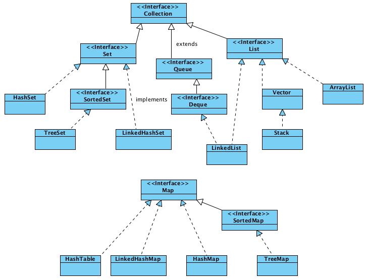

Содержание
Проработать
- HashMap
- Структуры данных в картинках. LinkedHashMap
- Структуры данных в картинках. HashMap
- Шпаргалка Java программиста 7.2 Типовые задачи: Обход Map'ы, подсчет количества вхождений подстроки
- Внутренняя работа HashMap в Java
- Подробный разбор класса HashMap
- Итераторы
- Знай сложности алгоритмов
- Гарвард. CS50 на русском. 1. Короткие видео. 1. Хэш таблицы
Основные разделы:
Коллекции- это специальные классы для хранения использования и удачение множества одинаковых объектов.

Вопросы на собеседование:
Iterator
- Методы Iterator - E next(); boolean hasNext(); void remove();
List
- Разница HashSet и LinkedHashSet? - LinkedHashSet хранит записи в порядке добавления, двухсвязный список.
- Разница HashSet и TreeSet? - TreeSet на основе дерева. При добавлении сортирует. Для добавления необходимо
передать Comparator или чтобы его элементы реализовывали Comparable.
Set
- Как получить значение из Hashset? Вызвать его Iterator или использовать метод toArray()
- Как хранятся элементы в Hashset? В односвязном списке.
- Внутри HashSet лежит HashMap с Values Object для заглушки.
- HashSet - Метод Add() возвращает true - был ли заменён объект.
Map
- Что происходит при получении значение из Hashmap? Мы ищем по ключу баккет а дальше проверяем на equals()
элементы пока не найдем.